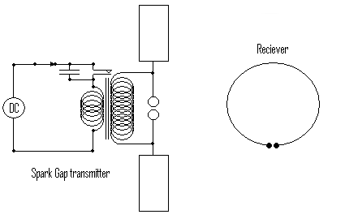
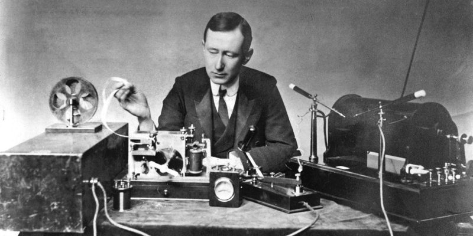
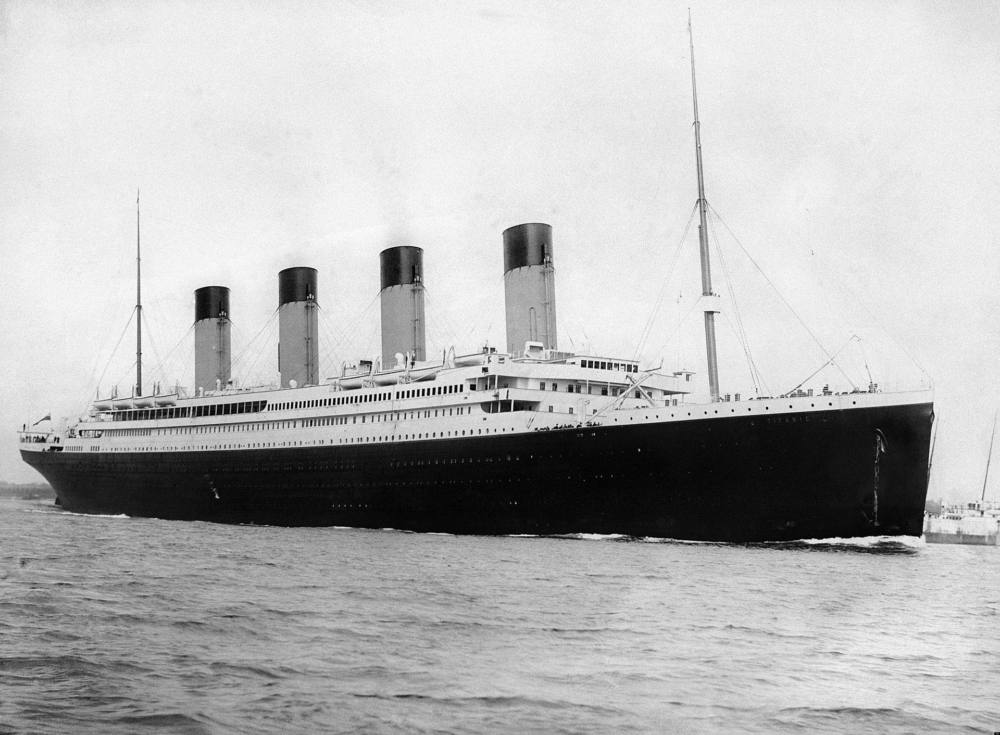
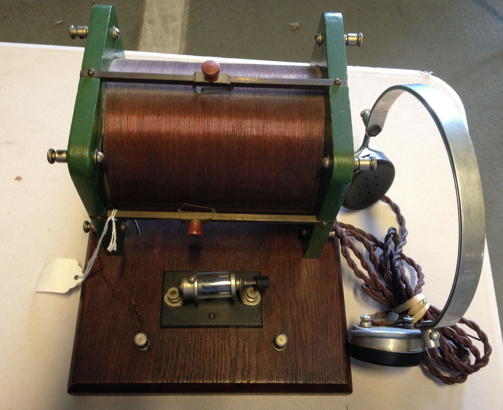
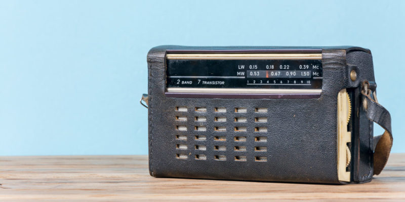

Invención de la radio


Musica de radio antigua
Historia de la creación de la radio
Verificación experimental de la teoria de maxwell
En 1887, Hertz construyó un montaje experimental con bobinas y una botella de Leyden que permitió comprobar la veracidad de la teoría del electromagnetismo, demostrando además que las ondas de radio electromagnéticas se transmitían a través del vacío, siendo detectadas a una corta distancia.
Montaje experimental de Hertz 1887[10].
Hertz logró modificar las frecuencias de las ondas generadas alterando tanto la bobina como el dispositivo receptor y la antena transmisora. A pesar de sus avances, no le encontró utilidad a las ondas de radio, falleciendo antes de los primeros dispositivos de transmisión de ondas.
Aportes de Tesla
En 1891, Nikola Tesla patentó la bobina de inducción, un elemento útil para el funcionamiento de los radios, mientras que en 1898 realizó una demostración del funcionamiento de un radiocontrol para manejar un barco a distancia. A pesar de sus inventos, malinterpretó los resultados obtenidos por Clerk, por lo que se enfocó en el desarrollo de un sistema de transmisión inalámbrica de energía al considerar que las ondas de radio se transmitían en línea recta.
Aportes de Marconi
En 1895, construyó un emisor a partir del modelo de Hertz, realizando mejoras en la sensibilidad del oscilador para aumentar la distancia de transmisión, logrando llegar a los 2 km de distancia. Ante la falta de interés del gobierno italiano, patentó su prototipo en el Reino Unido en 1987, mismo año donde logró aumentar el alcance a 55 km. Este logro estuvo marcado de polémica, ya que en este año Aleksandr Popov presentó un receptor de ondas muy similar en la Universidad de San Petersburgo y aunque se ha demostrado que Marconi presentó su invento con anterioridad, el gobierno ruso sigue reclamando la paternidad del invento.
Aparato receptor de Marconi[11].
Avances en transmisión sonora
El invento de Marconi no permitía la transmisión de ondas sonoras. A partir de investigaciones recientes y con sus respectivas patentes, se descubrió que Julio Cervera fue el primero en transmitir sonido en 1902 entre Javea e Ibiza, logrando transmitir voz humana por 85 km.
En enero de 1906, Fessenden logró transmitir ondas entre Reino Unido y Estados Unidos, tanto en transmisión como en recepción, superando los alcances de Marconi para el momento. Además, en diciembre de 1906 realizó la primera radiodifusión, esta con fines de entretenimiento.
Radio y servicios de emergencia
La radio tuvo un papel importante desde sus primeros años en la detección de barcos hundidos, lo que permitió el rescate de náufragos en el caso del Titanic en 1912 y el del Lusitania en 1915.
Titanic[12].
Radio Comercial
La primera radio portátil fue una radio galena, la cual se caracteriza por no necesitar de una fuente de energía, la cual fue creada por Henry Dunwoody y Greenleaf Picard en 1910. La cual poseía un peso de 10 Kg. La primera radio que permitía cambiar la emisora llegó en 1917 de mano de Lucien Lévy.
Radio Galena[13].
Las transmisiones comerciales llegaron a la población en la década de 1920, siendo la primera emisora regular, la estadounidense 8MK, la cual fue fundada en 1920 en Detroit, extendiéndose en pocos años y creando emisoras de forma exponencial, motivo por el que se considera como la época dorada de la radio.
Su éxito fue tal que conllevó a su incorporación en los automóviles a partir del año 1927. En 1933 se creó la radio FM, lo que permitió abaratar costos, mejorar la calidad del sonido y aumentar las frecuencias disponibles para las distintas emisoras. El último gran avance que experimentaron llegó en 1948, gracias a la invención del transistor, el cual mejoró su rendimiento, peso, tamaño y precio.
Radio de transistores[14].
La radio a día de hoy
La radio empezó a decaer en los años 80 a causa de las nuevas tecnologías más eficientes y su dura competencia con la televisión, pero en los últimos años ha presentado una nueva revitalización gracias al internet y las posibilidades que este ha traído, como lo son las radios digitales y los formatos adaptados en emisiones radiales, también conocidos como los podcast, demostrando que este formato siempre tendrá un público dispuesto a disfrutarlo.

Podcast[15].